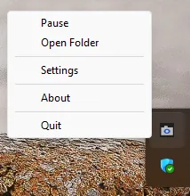
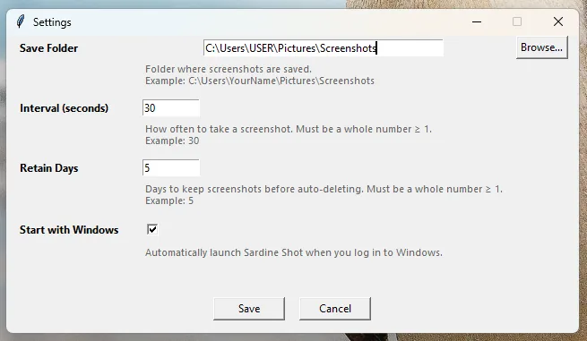

Sardine Shot
A small Windows app that takes a screenshot every few seconds and saves it to a folder you choose. It always shows an icon in the system tray.


(open full size)

(open full size)What it does
- Takes a screenshot every few seconds. You choose how often.
- Saves each one as a PNG file with the date and time in its name.
- Deletes old screenshots after the number of days you choose.
- Runs from the system tray, with no main window. You can pause it, open the folder, or quit from the tray menu.
- Is a single
.exefile. Python is not needed.
Point the save folder at a Dropbox, Google Drive, or OneDrive folder, and the screenshots sync to your phone or any browser, with no extra account or server.
Use it openly
Sardine Shot is not stealth software. Use it on a computer you own or manage, tell the people who use that computer, and leave the tray icon visible so they know it is running.
Besides family computers, it also fits caregiver help, classroom and lab machines, kiosk PCs, catching a problem that is hard to reproduce, and keeping a visual log of your own work.
Set it up
- Download
sardine_shot.exe. - Double-click it. A camera icon appears in the system tray.
- Right-click the tray icon and open Settings.
- Choose the save folder, how often to take a screenshot, and how many days to keep them. Click Save.
To start it with Windows, press Win + R, type shell:startup, and put a shortcut to the .exe in that folder.
Why it exists
Microsoft Family Safety filters content and reports activity, but it cannot take a screenshot every few minutes. Sardine Shot does only that, without subscriptions, accounts, or extra monitoring software. The name comes from the sardines of Moalboal, a place in the Philippines.